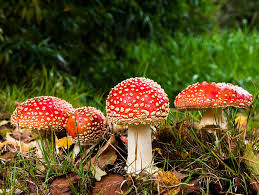

Cogumelos Venenosos
Nessa parte, vamos entrar num terreno perigoso!!!
Metade de um cogumelo pode ser mortal para uma pessoa de 60 quilos; espécies podem ser predadas por insetos.
Presente em muitos filmes e desenhos de contos de fadas, de longe ele se parece com um guarda-chuva vermelho em miniatura repleto de bolinhas brancos. De perto, a realidade é outra: cogumelos com essa aparência podem ter um veneno mortal.
A espécie que aparece na foto, por exemplo, se trata de uma Amanita c.f. muscaria, um cogumelo introduzido no Brasil que em grandes quantidades pode levar seres humanos à óbito.>
Por isso é importante dizer que mesmo que um cogumelo estiver comido por insetos não quer dizer que é comestível aos humanos. Nosso corpo é completamente diferente do deles, conta.
Isso pode explicar, em parte, a existência de espécies tóxicas e comestíveis em um mesmo gênero. Assim como a mesma toxina em gêneros diferentes. Por isso, a coleta e consumo de cogumelos na natureza deve ser realizada com muita cautela", diz.
